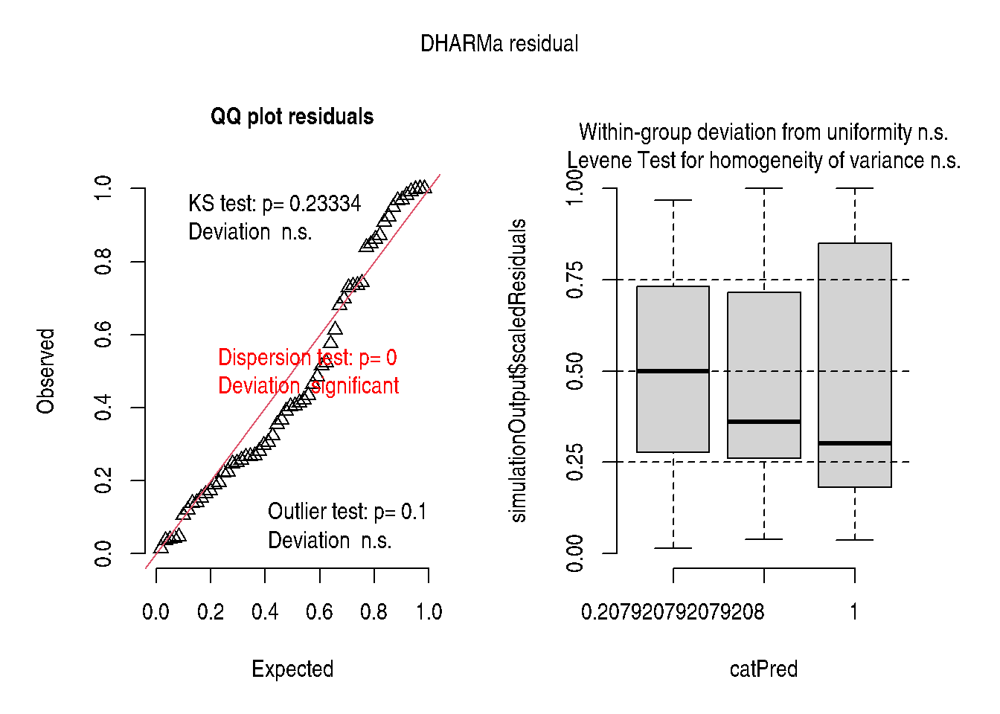
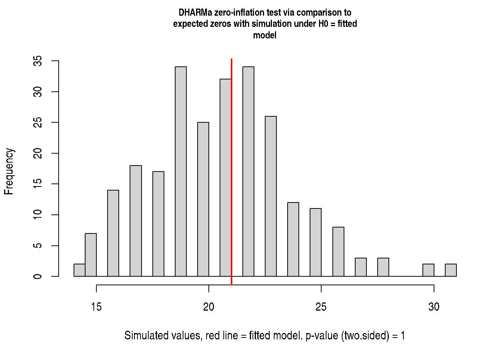

Chapter 13: Zero-Inflated and Hurdle Models
Handling Excess Zeros in Count and Continuous Responses
2026-05-17
Source:vignettes/chapter-13-zero-inflated.qmd
1 Overview
Chapter 13 addresses responses with excess zeros — more zeros than a standard Poisson or binomial model predicts.
Two modelling strategies:
| Model | Structure | Interpretation |
|---|---|---|
| Zero-Inflated (ZIP/ZINB) | Mixture: structural zeros + count process | Some units can never have a non-zero count |
| Hurdle | Two-part: binary + truncated count | All non-zero counts come from a separate count process |
The zero-inflated Poisson model:
\[P(Y_i = 0) = \pi_i + (1 - \pi_i)e^{-\lambda_i}\] \[P(Y_i = y) = (1 - \pi_i)\frac{e^{-\lambda_i}\lambda_i^y}{y!}, \quad y > 0\]
2 Zero-Inflated Poisson GLMM
if (requireNamespace("glmmTMB", quietly = TRUE)) {
simulate_zinb <- function(n, mu, size, zprob) {
structural_zero <- stats::rbinom(n, size = 1, prob = zprob) == 1
counts <- stats::rnbinom(n, mu = mu, size = size)
counts[structural_zero] <- 0L
counts
}
set.seed(123)
zi_data <- data.frame(
trt = factor(rep(c("control", "low", "high"), each = 20)),
block = factor(rep(1:5, times = 12)),
count = c(
simulate_zinb(20, mu = 2, size = 2, zprob = 0.5),
simulate_zinb(20, mu = 5, size = 2, zprob = 0.3),
simulate_zinb(20, mu = 10, size = 2, zprob = 0.1)
)
)
# Zero-inflated Poisson GLMM
fit_zip <- glmmTMB::glmmTMB(
count ~ trt + (1 | block),
ziformula = ~ trt,
data = zi_data,
family = poisson()
)
summary(fit_zip)
} Family: poisson ( log )
Formula: count ~ trt + (1 | block)
Zero inflation: ~trt
Data: zi_data
AIC BIC logLik -2*log(L) df.resid
335.0 349.7 -160.5 321.0 53
Random effects:
Conditional model:
Groups Name Variance Std.Dev.
block (Intercept) 0.02129 0.1459
Number of obs: 60, groups: block, 5
Conditional model:
Estimate Std. Error z value Pr(>|z|)
(Intercept) 0.4251 0.3335 1.275 0.202449
trthigh 1.7656 0.3378 5.226 1.73e-07 ***
trtlow 1.2931 0.3432 3.768 0.000164 ***
---
Signif. codes: 0 '***' 0.001 '**' 0.01 '*' 0.05 '.' 0.1 ' ' 1
Zero-inflation model:
Estimate Std. Error z value Pr(>|z|)
(Intercept) -0.0545 0.6292 -0.087 0.931
trthigh -1.3324 0.8419 -1.583 0.113
trtlow -1.0695 0.8198 -1.305 0.1923 Hurdle Model
if (requireNamespace("glmmTMB", quietly = TRUE) && exists("zi_data")) {
fit_hurdle <- glmmTMB::glmmTMB(
count ~ trt + (1 | block),
ziformula = ~ trt,
data = zi_data,
family = glmmTMB::truncated_poisson()
)
summary(fit_hurdle)
} Family: truncated_poisson ( log )
Formula: count ~ trt + (1 | block)
Zero inflation: ~trt
Data: zi_data
AIC BIC logLik -2*log(L) df.resid
335.3 349.9 -160.6 321.3 53
Random effects:
Conditional model:
Groups Name Variance Std.Dev.
block (Intercept) 0.01856 0.1362
Number of obs: 60, groups: block, 5
Conditional model:
Estimate Std. Error z value Pr(>|z|)
(Intercept) 0.4363 0.3316 1.316 0.188299
trthigh 1.7540 0.3367 5.210 1.89e-07 ***
trtlow 1.2860 0.3425 3.755 0.000173 ***
---
Signif. codes: 0 '***' 0.001 '**' 0.01 '*' 0.05 '.' 0.1 ' ' 1
Zero-inflation model:
Estimate Std. Error z value Pr(>|z|)
(Intercept) 0.4055 0.4564 0.888 0.3744
trthigh -1.7918 0.7217 -2.483 0.0130 *
trtlow -1.5041 0.6892 -2.182 0.0291 *
---
Signif. codes: 0 '***' 0.001 '**' 0.01 '*' 0.05 '.' 0.1 ' ' 14 Diagnostics
if (requireNamespace("glmmTMB", quietly = TRUE) &&
requireNamespace("DHARMa", quietly = TRUE) &&
exists("fit_zip")) {
sim_r <- DHARMa::simulateResiduals(fit_zip, plot = TRUE)
DHARMa::testZeroInflation(sim_r)
}

DHARMa zero-inflation test via comparison to expected zeros with
simulation under H0 = fitted model
data: simulationOutput
ratioObsSim = 1.0114, p-value = 1
alternative hypothesis: two.sided5 Key Takeaways
- Zero-inflated models are appropriate when zeros arise from two mechanisms: structural (always-zero) and sampling (could be non-zero).
- Hurdle models assume all zeros come from the binary part.
-
glmmTMB::glmmTMB()fits both types; useziformulato specify the zero-inflation component. -
DHARMa::testZeroInflation()tests whether residual zeros exceed what the fitted model predicts.
6 References
Stroup, W. W., Ptukhina, M., and Garai, S. (2024). Generalized Linear Mixed Models: Modern Concepts, Methods and Applications (2nd ed.). CRC Press.